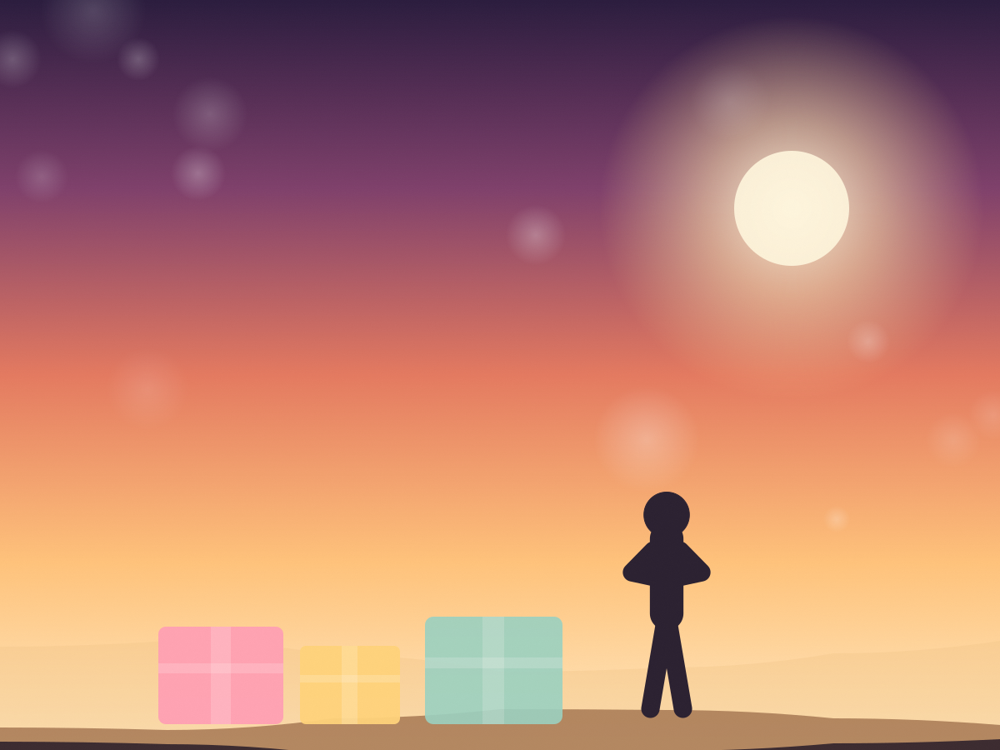
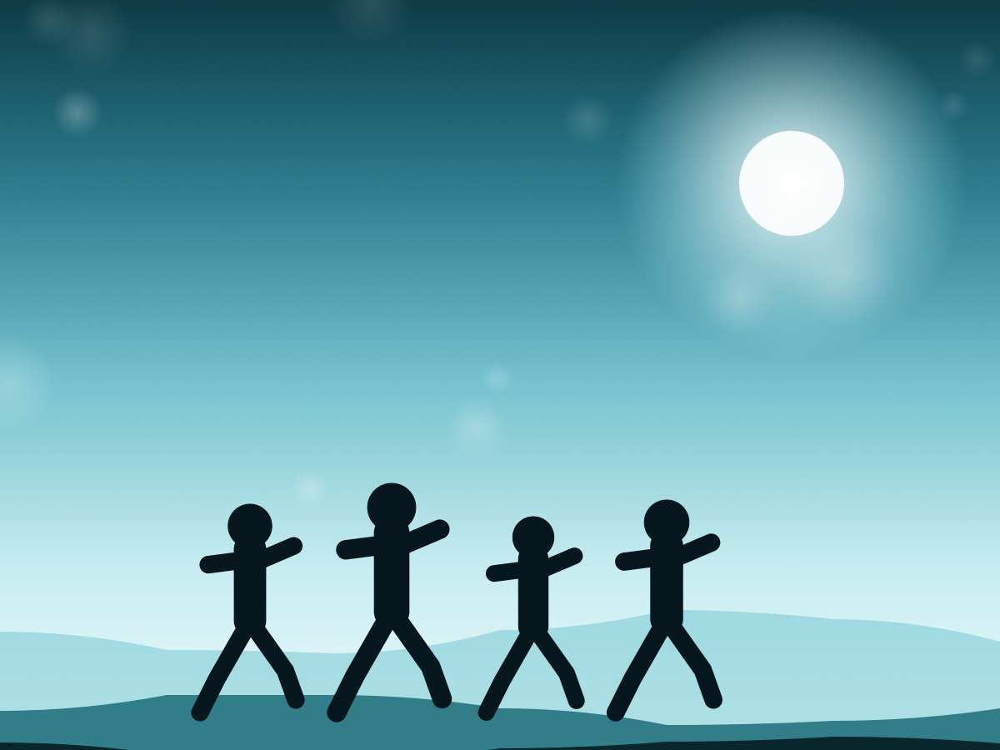
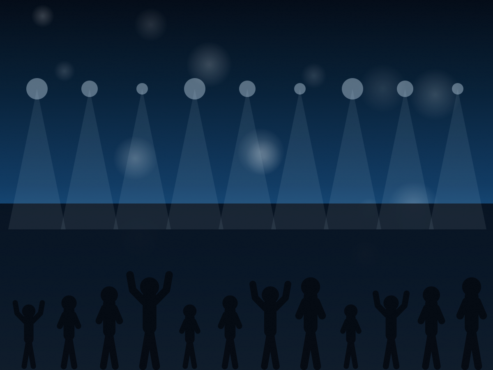

Materiálna pomoc
Balíky s potravinami, hygienou, zdravotníckymi pomôckami, oblečením a hračkami — posielame priamo rodinám.
O nadácii
Nadácia Anjelské krídla vznikla 22. decembra 2016. Nezištne pomáha vážne chorým deťom a ich rodinám, mamám, ktoré sa o choré deti starajú samy, rodinám v núdzi, týraným matkám a deťom, seniorom, krízovým centrám a sociálnym zariadeniam.
Nadáciu tvoria odborníci a dobrovoľníci, ktorí pomáhajú vo svojom voľnom čase — bez nároku na odmenu či mzdu. Nadácia nepoberá štátne dotácie a je apolitická. Všetko, čo dokáže rozdať, vzniká z darov ľudí a firiem a z 2 % zaplatenej dane.
„Pomoc, ktorá príde načas, dokáže rodine vrátiť pokoj aj nádej.“ Ing. Alexandra Majeríková — zakladateľka nadácie
Ako pomáhame
Každá žiadosť je iná. Preto pomáhame konkrétne — vecami, financiami aj časom.
Balíky s potravinami, hygienou, zdravotníckymi pomôckami, oblečením a hračkami — posielame priamo rodinám.
Príspevok na konkrétnu situáciu — lieky, pomôcky, doprava do nemocnice, nedoplatky či nečakaný výdavok.
Relaxačné, ozdravné a rehabilitačné pobyty, ktoré rodinám vrátia silu pokračovať ďalej.
Koncerty, behy a zbierky, ktoré spájajú ľudí a menia dobrú vôľu na konkrétnu pomoc.
Žiadosť o pomoc
O pomoc môže požiadať rodina, jednotlivec aj zariadenie. Stačí vyplniť dve tlačivá — žiadosť o príspevok a súhlas so spracovaním osobných údajov. Bez oboch, žiaľ, žiadosť nevieme posúdiť.
Vyplnené a podpísané tlačivá pošlite na info@nadaciaanjelskekridla.sk alebo poštou na adresu Nadácia Anjelské krídla, Slovenských dobrovoľníkov 135/30, 010 03 Žilina.
Projekty
Dlhodobé programy aj jednorazové zbierky — vždy s konkrétnym cieľom.

CeloročnePosielame potraviny, hygienu a pomôcky rodinám, ktoré sa starajú o vážne choré dieťa.
Požiadať o pomoc
Jar & jeseňBehy pre deti a rodiny — spájame ľudí, ktorí chcú pomáhať pohybom aj štartovným.
Podporiť podujatie
BenefíciaPrvý benefičný koncert nadácie v Žiline vyzbieral 2 000 € pre onkologických pacientov.
Chcem sa zapojiťČlánky
Krátke správy z pomoci, podujatí a zbierok.
Galéria
Kliknutím obrázok zväčšíte. Prechádzať môžete šípkami alebo potiahnutím prsta.
Fotografie sú zatiaľ ilustračné — v priečinku assets/img/ ich stačí nahradiť vlastnými.
2 % z dane
Nadácia nedostáva štátne dotácie. Vaše 2 % zo zaplatenej dane sú pre nás jedným z najdôležitejších zdrojov pomoci — a vás nestoja nič navyše.
Zamestnanci žiadajú zamestnávateľa o Potvrdenie o zaplatení dane a spolu s Vyhlásením ho doručia daňovému úradu.
Podporte nás
Každý dar putuje k rodinám, ktoré oň požiadali a ktorých situáciu poznáme.
Jednorazovo alebo pravidelne — na účet nadácie.
Do poznámky pre prijímateľa môžete uviesť účel daru, napríklad „balíček pre rodinu“.
Rozhodnite o podiele svojej dane. Údaje nájdete o sekciu vyššie.
Zobraziť údajeDobrovoľníctvo, firemné partnerstvo, materiálny dar alebo pomoc s podujatím.
Ozvite sa námPríbehy
„Keď sme ostali na všetko sami, prišiel balík a s ním pocit, že na nás niekto myslí.“
„Rehabilitačný pobyt bol prvý týždeň po rokoch, keď sme sa mohli nadýchnuť.“
„Pomoc prišla rýchlo a bez zbytočných otázok. To v takej chvíli znamená veľa.“
Ohlasy sú ilustračné — nahraďte ich skutočnými príbehmi so súhlasom rodín.
Partneri
Firmy a ľudia, ktorí nadáciu podporujú dlhodobo alebo pomohli s konkrétnym projektom.
Kontakt
Žiadate o pomoc, chcete darovať alebo sa pridať ako dobrovoľník? Ozvite sa — odpovedáme každému.